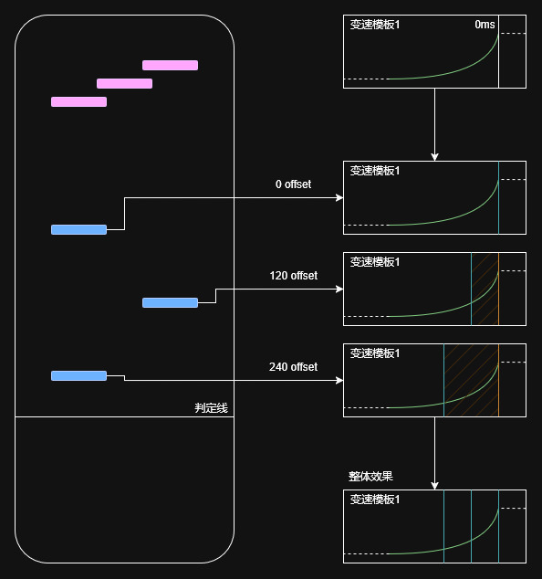

基于模板的音游变速系统开发设计方案
前言
在传统的音游开发中，设计音符变速效果时可能遇到这些常见问题：
- 音符速度与 BPM 组高度耦合，无法同时存在多种变速，修改速度会影响判定时间
- 多个音符设置变速繁琐，无法统一效果且数据结构混乱
- 音符之间难以协调速度，无法实现音符之间相对静止的整体变速
- 难以协调谱面演出效果和玩家流速设置
本文提出了一种基于变速模板和变速 Offset 的方案，以一种非常优雅的设计方案来解决这些问题。
谱面数据结构定义
- 谱面存档文件 {}
- BPM 组 []（不影响速度，用于确定音符的判定时间）
- Bpm 元素 {}
- 开始节拍: [x,x,x]
- bpm: xxx
- Bpm 元素 {}
- 变速组 []
- 变速元素 {}
- 变速类型: (相对|绝对)
- 变速数据: [见下文]
- 变速元素 {}
- 音符组 []
- 音符元素 {}
- 判定节拍: [x,x,x]
- 变速组引用下标: xxx
- 变速 offset: xxx
- 音符元素 {}
- BPM 组 []（不影响速度，用于确定音符的判定时间）
BPM 组和判定时间
在此方案中，BPM 组与变速视觉效果完全解耦，BPM 组是完全依据音乐的 bpm 确定的，只受到音乐影响，与其他任何内容都无关。
BPM 组是线性、依据开始节拍正序排序的，这意味着任意时刻有且仅有 1 个 Bpm 元素被激活。
单个 Bpm 元素的构成如下：
- Bpm 元素
- 开始节拍（通常是一个三元数组，例如 [2,3,4]，代表位于第 2 + (3 / 4) = 2.75 拍。首个 Bpm 元素的节拍经过计算后必须等于 0，末个 Bpm 元素在激活后会持续到谱面结束。）
- bpm（通常是一个整数或小数，例如 128，表示激活后直至下个 Bpm 元素激活前音乐的 bpm。）
在以下示例中，我们定义一个音乐对应的 BPM 组：
- BPM 组
- Bpm 元素 1
- 开始节拍: [0,0,1] = 0 // “1” 避免了除 0 异常
- bpm: 120
- Bpm 元素 2
- 开始节拍: [2,2,4] = 2.5 // 此时第 2 个元素激活，第 1 个元素自动失效
- bpm: 60
- Bpm 元素 3
- 开始节拍: [4,0,1] = 4
- bpm: 80
- Bpm 元素 1
下面示范如何根据 BPM 组和音符判定节拍计算判定毫秒时间：
- 假设一个音符位于 [0,1,2] = 0.5 拍
- 可查到此音符位于第 1 个 Bpm 元素内
- 此音符在第 1 个 Bpm 元素内已经经过了 0.5 拍
- 按照 120 的 bpm，计算得到每拍的时间 60s / 120 = 0.5s = 500ms
- 所以可得此音符的判定时间为 0.5 * 500ms = 250ms
- 假设一个音符位于 [3,1,2] = 3.5 拍
- 可查到此音符位于第 2 个 Bpm 元素内
- 此音符在第 2 个 Bpm 元素内已经经过了 3.5 - 2.5 = 1 拍
- 按照 60 的 bpm，计算得到每拍的时间 60s / 60 = 1s = 1000ms
- 由于完整经过了第 1 个 Bpm 元素，计算之前的时间为 (2.5 - 0) * (60 / 120) = 1.25s = 1250ms
- 相加所有时间得到此音符的判定时间为 1250ms + 1000ms = 2250ms
- 假设一个音符位于 [5,0,1] = 5 拍
- 可查到此音符位于第 3 个 Bpm 元素内
- 此音符在第 3 个 Bpm 元素内已经经过了 5 - 4 = 1 拍
- 按照 80 的 bpm，计算得到每拍的时间 60s / 80 = 0.75s = 750ms
- 由于完整经过了第 1 个和第 2 个 Bpm 元素，计算之前的时间为 [(2.5 - 0) * (60 / 120)] + [(4 - 2.5) * (60 / 60)] = 1.25s + 1.5s = 2750ms
- 相加所有时间得到此音符的判定时间为 2750ms + 750ms = 3500ms
变速音符速度-时间关系计算
此设计方案的变速效果核心思想是从音符判定时间出发，倒推前一段时间的流速变化。
这里以 CyanStars 的设计为例，通过贝塞尔曲线可以实现可视化编辑器和减小谱面文件体积占用。
- 变速数据 []
- 三次贝塞尔曲线元素 1 []
- 贝塞尔控制点 1 {}
- x: xxx（相对于判定时间的毫秒时间偏移）
- y: xxx（流速）
- 贝塞尔控制点 2 {}
- ...
- 贝塞尔控制点 3 {}
- ...
- 贝塞尔控制点 4 {}
- ...
- 贝塞尔控制点 1 {}
- 三次贝塞尔曲线元素 2 []
- ...
- 三次贝塞尔曲线元素 1 []
值得注意的是，这里的变速数据和三次贝塞尔曲线元素是有一定要求的：
- 在判定时刻必须有明确流速，即首个曲线元素必须存在，且其控制点 1 的 x 值必须等于 0
- 曲线元素之间必须是“首尾相连”（连续）的，即后一个曲线元素的控制点 1 必须完全等于上一个曲线元素的控制点 4
- 每个曲线元素必须是“不折返”（x 轴单调，且任意 x 值有且仅有一个对应的 y 值）的，这里有两种验证方案：
- 验证控制点 2、控制点 3 的 x 值在控制点 1、控制点 4 区间内，这是确保曲线完全不折返的充分非必要条件
- 求导计算曲线在 x 方向上是单调的，这是充分必要条件，但计算难度大
- 所有控制点 1、控制点 4 的 x 值必须是单调递增或单调递减的（取决于程序定义判定偏移为正值还是负值），且不能相同
以上限制意味着在程序看来，流速在任意时刻都是平滑变化的，但如果谱师需要一种类似于瞬间变化的流速，可以创建一个在短时间内大幅变化的曲线来合法模拟这种效果，详见下文。
在定义流速时，我们从判定偏移 0 时开始，倒推在判定前音符的流速；在游戏时，我们从最后一个曲线元素读取音符的流速，直到进入第一个曲线元素。这两个操作的方向是相反的。
一些音游可能会允许玩家自定义流速，而玩家流速可能会破坏谱面演出效果，在这里我们引入了变速类型枚举（见谱面数据结构定义），谱师可以通过将变速组标记为绝对类型，谱面在加载此流速时不会对这个变速组乘算玩家流速，从而保证演出效果不受玩家流速影响。谱师亦可将变速组标记为相对类型，以在玩家流速的基础上进一步变速。
有两个例外情况需要注意：
- 音符的判定时间偏移在最后一个元素以外，我们默认将最后一个元素的 y 值作为音符流速，此时音符将以恒定速度进入最后一个变速元素，随后将由此变速元素接管音符流速
- 在音符超过判定线后（例如玩家 miss），我们默认以第一个元素的 y 值作为音符流速，此时音符将继续以恒定速度运动直到被销毁
变速音符位置-时间关系计算
位置-时间关系较速度-时间关系稍复杂，这里提出两种解决方案，用于在加载谱面时预先“烘焙”位置-时间关系，并在游戏运行时查询：
- 采用采样和累加的方式，从判定时间（0 偏移，0 位置）按照一定采样频率倒推速度，并累加在判定前某一时刻的位置，这种方式是大致精确的
- 注意：如果采取采样方式，建议校验每个曲线元素持续时间至少达到一个采样间隔，以确保短时间大幅度的速度变化能被采样
- 采用积分运算，将速度-时间曲线转为位置-时间曲线，这种方式是完全精确的，但是计算难度较大
一旦掌握位置-时间关系，我们可以做到：
- 当音符接近判定线到一定范围时，动态生成音符
- 当音符远离判定线到一定范围时（用于谱面表演效果），将音符销毁或归还到池
- 在游戏运行时实时更新音符位置（可以被实时更新速度替代）
特别的，对于长条音符，我们可以将音符的头和尾视为两个互不相干且可自由变速的物体，分别为每个物体指定变速组引用，并每帧计算并更新长条长度。如果长条被按住/进入判定时间，则可以只根据长条尾到判定线的距离更新长条长度，以此实现“按住截断”的视觉效果。
将多个音符作为一个整体变速
有时候我们可能想让多个音符作为一个整体，音符之间相对位置固定而整体变速，变速 offset 为此提供了绝佳的解决方案：
- 创建一个变速组，并编写变速曲线
- 让所有音符引用此变速组
- 为每个音符设定不同的变速 offset，具体如下：
- 这一组音符的最后一个音符的 offset 为 0，代表完全应用整个变速效果
- 向前计算每个音符与最后一个音符的时间差，并作为 offset 填入，以将此音符的变速效果与最后一个音符同步
- 在速度-时间和位置-时间加载完毕后，游戏运行查表时，不再以当前判定时间偏移查表，而是以判定时间偏移 + offset 查表

进一步拓展
基于上文的设计思路，我们可以轻松将音符从一维的变速拓展到二维的平面位置移动，毕竟只是坐标轴不同，根据判定时间倒推前一段时间音符的位置也仅仅是多了一个轴而已。甚至如果你想，还可以拓展到三维的空间位置移动、音符的三轴旋转等方面。
不过如果想要拓展到摄像机位置和角度移动、轨道位置和角度移动，就要稍作一些修改了，这些事件是从谱面 0 时间点开始，持续正向计算的，此时我们需要将曲线改造成正向推算速度-时间/位置-时间关系，数据结构、编辑器可能也需要一并稍作修改。
总结
本文提出的基于变速模板和变速 Offset 的音符变速系统设计方案，其核心在于将决定判定时间的 BPM 组与决定视觉流速的变速组彻底解耦，并引入了模板化的设计思路。这一设计从根本上解决了传统方案中音符速度与 BPM 高度耦合所带来的种种限制，亦提高了谱师在编写音符变速效果时的直观性和简易性。
The End